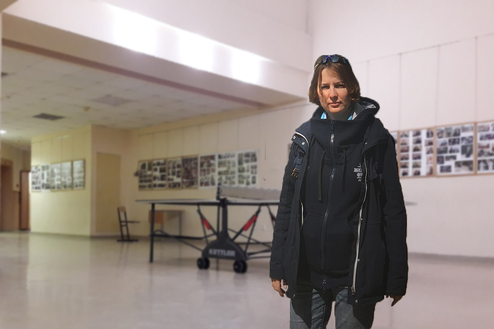
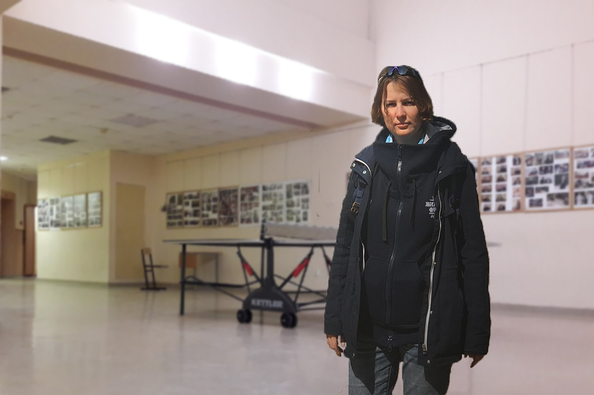
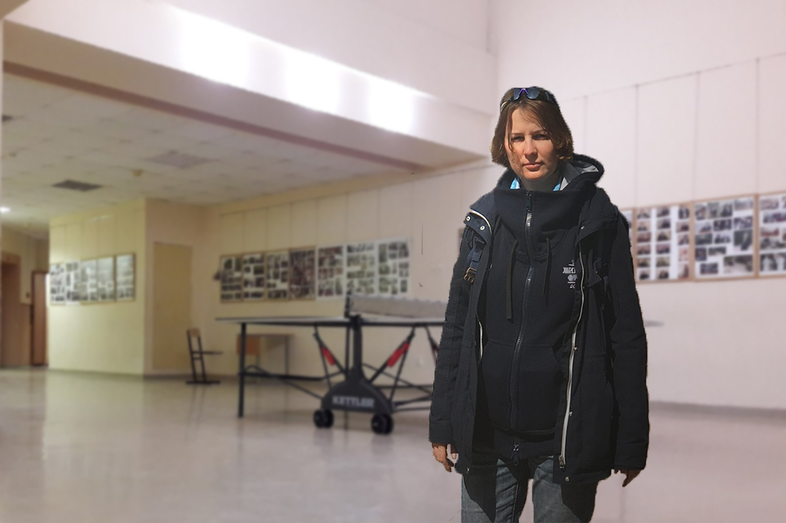
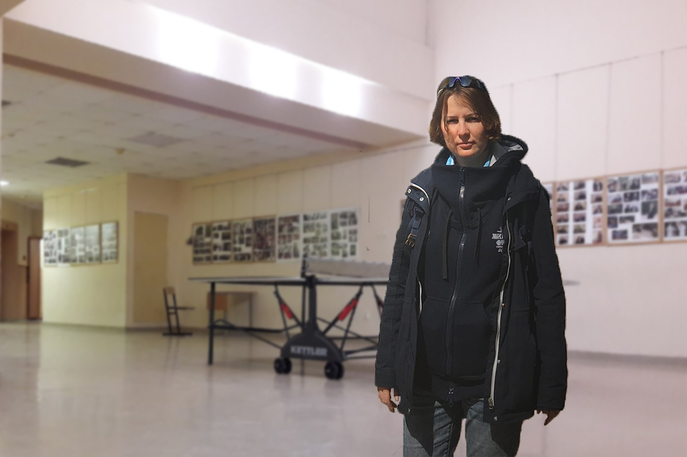

«Так, теперь направлюсь к химикам, надеюсь, с ними быстро договорюсь. Ой, там Елена Алексеевна, в таком случае, сперва нужно разобраться со спортивным зачетом»-подумал я.
Но тут меня прервал возглас Елены Алексеевны:
- А-а-а-а, дорогой, ну здравствуй!
Елена... Здравствуйте, Алексеевна. Ой, то есть я хотел сказать: "Здравствуйте, Елена Алексеевна!"
- И я рада тебя видеть. Хм... Не мог бы ты подать теннисный мячик, а то он куда-то в кабинет Минарского закатился, а после этого обсудим твой зачет.
- Х-хорошо...
Дальше